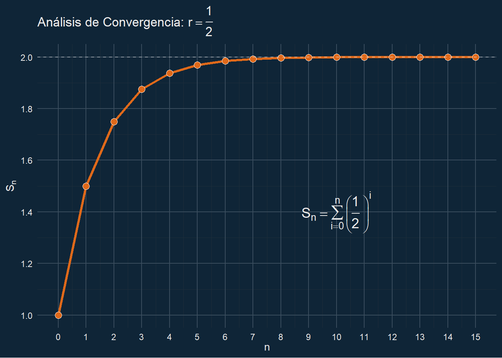
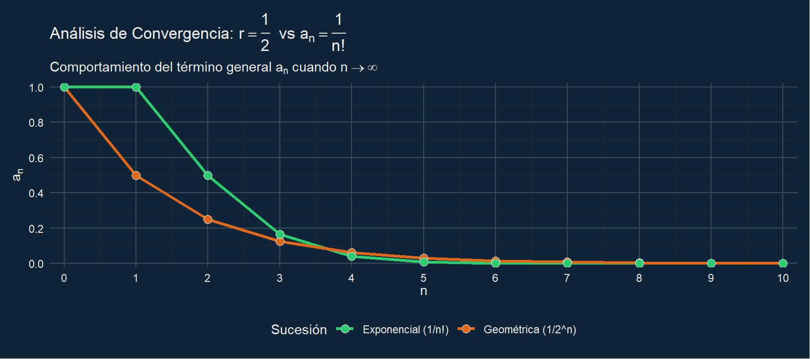

1 Series numéricas
1.1 Introducción
En este capítulo, estudiaremos la suma de los términos de una sucesión infinita. A diferencia de las sumas finitas, la suma de infinitos términos requiere el concepto de límite para cobrar sentido.
1.2 Series notables: La serie geométrica
Una de las series más importantes en el análisis es la serie geométrica, donde cada término se obtiene multiplicando el anterior por una razón constante \(r\).
\[\sum_{n=0}^{\infty} ar^n = a + ar + ar^2 + ar^3 + \dots\]
Teorema: La serie geométrica converge si y solo si \(|r| < 1\). En tal caso, su suma es: \[S = \frac{a}{1-r}\]
1.2.1 Visualización
A continuación se presenta el código necesario para generar la suma parcial \(S_n = \sum_{i=0}^{n} \left(\frac{1}{2}\right)^i\) utilizando Python:
import matplotlib.pyplot as plt
import numpy as np
# Configuración para usar LaTeX en todo el texto de la gráfica
plt.rcParams.update({
"text.usetex": False, # Usamos el motor mathtext de matplotlib (más compatible en web)
"font.family": "serif",
"mathtext.fontset": "cm" # Fuente Computer Modern (estilo LaTeX clásico)
})
# Datos
n_continuo = np.linspace(0, 15, 100)
s_n_suave = 2 * (1 - (0.5)**(n_continuo + 1))
n_puntos = np.arange(16)
s_puntos = 2 * (1 - (0.5)**(n_puntos + 1))
plt.figure(figsize=(9, 6))
# Graficamos
plt.plot(n_continuo, s_n_suave, label=r'Tendencia de $S_n$', color='teal', linewidth=2)
plt.scatter(n_puntos, s_puntos, color='darkorange', s=30, zorder=5, label=r'Sumas parciales $S_n$')
plt.axhline(y=2, color='red', linestyle='--', alpha=0.6, label=r'Límite $L = 2$')
# Textos en formato LaTeX (usando la r antes de las comillas)
plt.title(r'Convergencia de la Serie Geométrica $\sum_{i=0}^{\infty} \left(\frac{1}{2}\right)^i$', fontsize=16)
plt.xlabel(r'Número de términos ($n$)', fontsize=12)
plt.ylabel(r'Valor de la suma parcial ($S_n$)', fontsize=12)
plt.grid(True, linestyle=':', alpha=0.6)
plt.legend(fontsize=11)
plt.show()1.3 El Criterio de la razón (D’Alembert)
Este criterio es uno de los más potentes en el Análisis Real, especialmente cuando trabajamos con sucesiones que involucran factoriales o potencias \(n\)-ésimas, ya que el cociente permite simplificaciones inmediatas.
1.3.1 Definición teórica
Sea \(\sum a_n\) una serie de términos positivos. Supongamos que existe el límite: \[L = \lim_{n \to \infty} \left| \frac{a_{n+1}}{a_n} \right|\]
El criterio establece que: 1. Si \(L < 1\), la serie converge absolutamente. 2. Si \(L > 1\) (o \(L = \infty\)), la serie diverge. 3. Si \(L = 1\), el criterio no es concluyente.
1.3.2 Comparación visual: rapidez de convergencia
Para entender el impacto de \(L\), comparamos la serie geométrica (\(r=0.5, L=0.5\)) con la serie que define al número \(e\), \(\sum \frac{1}{n!}\), donde el límite de la razón es \(L=0\). Notarás cómo la serie exponencial “aplasta” a la geométrica conforme \(n\) crece.
1.3.3 Ejemplo visual del criterio de la razón
Para ilustrar qué tan rápido decrecen los términos cuando el límite \(L < 1\), comparamos la serie geométrica (\(r=0.5\)) con la serie exponencial (\(1/n!\)).
